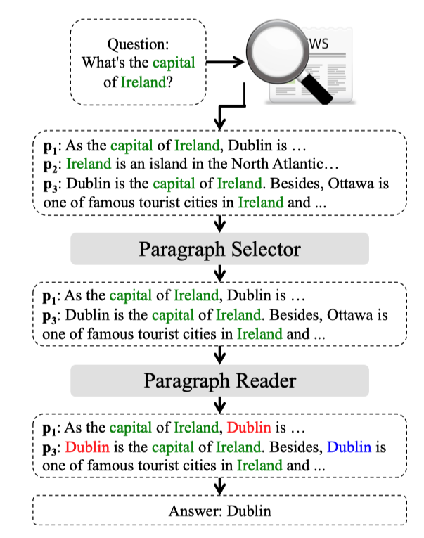

简介
Denoising Distantly Supervised Open-Domain Question Answering 这篇文章是 清华的林衍凯同学和刘知远老师团队在 ACL2018 上发表的文章， 主要解决 开放问答领域中的 远程监督的噪声问题。
模型动机
1） 现在的阅读理解，严重依赖于提前提供好的段落，这个和现实中的问答情况不符。
Despite their success, existing reading comprehension systems rely on pre-identified relevant texts, which do not always exist in real-world question answering (QA) scenarios.
2) 针对上述情况，斯坦福的陈丹琦提出基于远程监督的开放御自动问答系统(DS-QA)。首先从维基百科当中找到相关的信息，然后使用阅读理解的技术去提取答案
Chen et al. (2017) propose a distantly supervised open-domain question answering (DS-QA) system which uses information retrieval technique to obtain relevant text from Wikipedia, and then applies reading comprehension technique to extract the answer.
3）DS-QA的严重的不足是：远程监督带来了大量的噪音。
Although DS-QA proposes an effective strategy to collect relevant texts automatically, it always suffers from the noise issue.
4）一些现存的DS-QA系统，仅仅只是选取最相似的段落，然后对其进行阅读理解。而没有综合考虑多个段落。而往往一个问题的答案会在多个段落中提到（mentioned）
These methods only extract the answer according to the most related paragraph. … In fact, the correct answer is often mentioned in multiple paragraphs, and different aspects of the question may be answered in several paragraphs.
本文贡献
本文提出了由粗到细的远程监督开放域问答模型（coarseto-fine denoising model for DS-QA）,
- 首先通过信息检索找到一些跟问题相关的段落
- 使用所有检索到的段落，做快速阅读，并淘汰噪音段落
- 使用精读算法（即阅读理解的算法）在上述段落中的各个段落进行精度。
- 综合各个段落得到的答案，给出最终答案

本文在Quasar-T、SearchQA、TriviaQA三个数据集效果上显示了显著的提升。并将代码公布到了Github
模型详解
模型分为两部分：1）段落选择器（Paragraph Selector） 和2）段落阅读器（Paragraph Reader）。
假设问题为$q$，选择到的段落为$P={p_1,p_2,\cdots,p_m}$, 答案为$a$
段落选择器的目标是，给定$q$，计算$P$中每个段落是相关段落的概率，即：$\text{Pr}(p_i|q,P)$
段落阅读器的目标是，给定$q$，计算$P$中每个段落$p_i$中得到答案$a$的概率，即：$\text{Pr}(a|q,p_i)$
综上，给定$q$，得到答案$a$的概率为：
$$\text{Pr}(a|q,P)=\sum_{p_i\in P}{\text{Pr}(a|q,p_i)\text{Pr}(p_i|q,P)}$$
段落选择器
编码
使用全连接网络（MLP）或循环神经网络（RNN）对问题和段落进行了编码。并对问题$q$做了self attention
最后，通过交互、池化和softmax求的概率
$$\text{Pr}(p_i|q,P)=\text{softmax}(\text{max}_j{(p_i W q)})$$